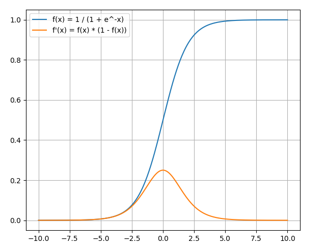

2.4 Activation Function
Some common activation functions are summarized and their derivatives are solved.
Created Date: 2025-05-10
The activation function of a node in an artificial neural network is a function that calculates the output of the node based on its individual inputs and their weights.
2.4.1 Sigmoid Function
A sigmoid function is any mathematical function whose graph has a characteristic S-shaped or sigmoid curve.
A common example of a sigmoid function is the logistic function, which is defined by the formula:
File sigmoid.py

Derivatives

2.4.2 ReLU Function
One of the most popular and widely-used activation functions is ReLU (rectified linear unit). As with other activation functions, it provides non-linearity to the model for better computation performance.
The ReLU activation function has the form:
The ReLU function outputs the maximum between its input and zero, as shown by the graph. For positive inputs, the output of the function is equal to the input. For strictly negative inputs, the output of the function is equal to zero.